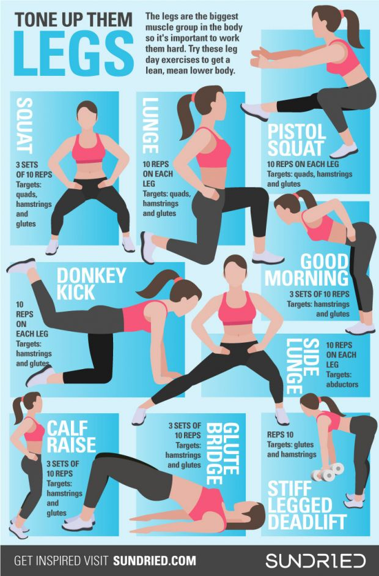
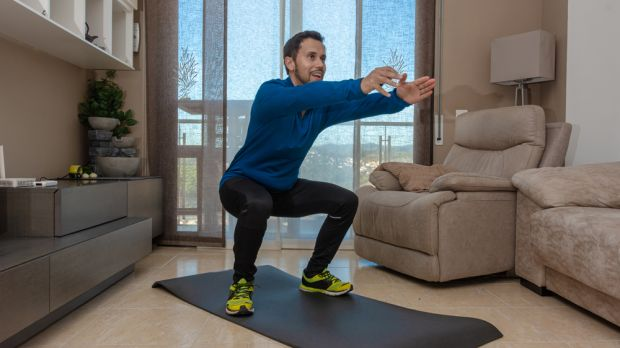
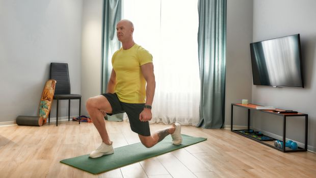
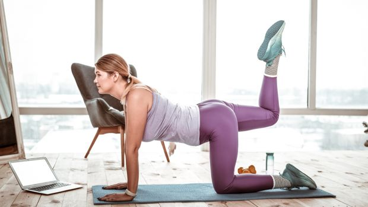

LEGS
Whatever your fitness goals are, whatever your current level of fitness and experience is, and whatever equipment and space you have available, there’s a workout for you on this website.
However, it’s rare that we come across a single session that suits just about everyone. So when the team at activewear brand Sundried shared this lower-body session, we were all too happy to pass it on to you.
You’ll work through three sets of each exercise in the workout, hitting your legs and glutes particularly hard, but also working your core. It can be done just about anywhere, since all but one of the exercises are bodyweight moves, and the odd one out can be done with any DIY weight (we’ve taken to using a couple of bricks that were lying about the garden).
If you have some free weights hanging around, it’s easy to incorporate them to make the workout harder. Other ways of making the workout harder include slowing the movements down so your muscles spend more time under tension, and limiting the amount of rest you give yourself between sets.

SQUAT

Sets 3 Reps 10
Targets Quads, hamstrings and glutes
Stand with your feet hip-width apart. Keeping your chest up and back straight throughout, bend your knees and lower, pushing your hips back until your thighs are parallel to the ground. Then drive through your heels to return to standing.
LUNGES

Sets 3 Reps 10 each side
Targets Quads, hamstrings and glutes
From standing, take a big step forwards with your right foot and lower until both your knees are bent at 90°. Push back up through your right foot to standing. Do all your reps on one leg, then switch to the other.
DONKEY KICK

Sets 3 Reps 10 each side
Targets hamstrings and glutes
Get on all fours with your hands under your shoulders and your knees on the floor under your hips. Engage your core and lift one leg behind you, keeping your knee bent so the sole of your foot ends up facing the ceiling. Bring your leg back down slowly. Do all your reps on one leg, then switch.